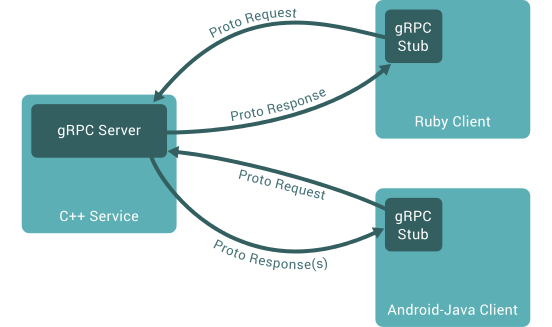
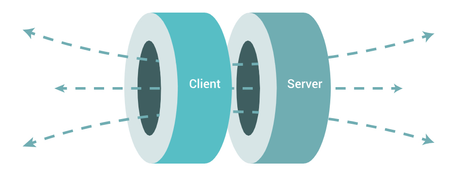
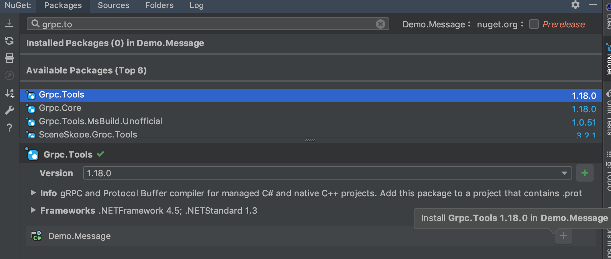

<!doctype html><html lang="zh-tw" class="theme-next mist use-motion"><head><meta charset="UTF-8"><meta http-equiv="X-UA-Compatible" content="IE=edge,chrome=1"><meta name="viewport" content="width=device-width,initial-scale=1,maximum-scale=1"><meta http-equiv="Cache-Control" content="no-transform"><meta http-equiv="Cache-Control" content="no-siteapp"><meta name="keywords" content=".NET Core,.NET,gRPC,Protobuf,Microservice,"><link rel="alternate" href="/atom.xml" title="Blackie's Failed Notes" type="application/atom+xml"><meta property="fb:admins" content="1227534428"><meta property="fb:app_id" content="1912565115693515"><meta name="description" content="介紹如何在 .NET Core 中開發 gRPC 應用程式 - 基礎入門"><meta name="keywords" content=".NET Core,.NET,gRPC,Protobuf,Microservice"><meta property="og:type" content="article"><meta property="og:title" content="gRPC development on .NET Core - Basic"><meta property="og:url" content="https://blackie1019.github.io/2019/02/10/gRPC-development-on-NET-Core-Basic/index.html"><meta property="og:site_name" content="Blackie&#39;s Failed Notes"><meta property="og:description" content="介紹如何在 .NET Core 中開發 gRPC 應用程式 - 基礎入門"><meta property="og:locale" content="en"><meta property="og:image" content="https://blackie1019.github.io/2019/02/10/gRPC-development-on-NET-Core-Basic/landing.png"><meta property="og:image" content="https://blackie1019.github.io/2019/02/10/gRPC-development-on-NET-Core-Basic/bi-communication.png"><meta property="og:image" content="https://blackie1019.github.io/2019/02/10/gRPC-development-on-NET-Core-Basic/02.png"><meta property="og:image" content="https://blackie1019.github.io/2019/02/10/gRPC-development-on-NET-Core-Basic/05.png"><meta property="og:image" content="https://blackie1019.github.io/2019/02/10/gRPC-development-on-NET-Core-Basic/03.png"><meta property="og:image" content="https://blackie1019.github.io/2019/02/10/gRPC-development-on-NET-Core-Basic/04.png"><meta property="og:image" content="https://blackie1019.github.io/2019/02/10/gRPC-development-on-NET-Core-Basic/01.png"><meta property="og:image" content="https://blackie1019.github.io/2019/02/10/gRPC-development-on-NET-Core-Basic/06.png"><meta property="og:image" content="https://blackie1019.github.io/2019/02/10/gRPC-development-on-NET-Core-Basic/07.png"><meta property="og:image" content="https://blackie1019.github.io/2019/02/10/gRPC-development-on-NET-Core-Basic/08.png"><meta property="og:image" content="https://blackie1019.github.io/2019/02/10/gRPC-development-on-NET-Core-Basic/09.png"><meta property="og:image" content="https://blackie1019.github.io/2019/02/10/gRPC-development-on-NET-Core-Basic/10.png"><meta property="og:image" content="https://blackie1019.github.io/2019/02/10/gRPC-development-on-NET-Core-Basic/11.png"><meta property="og:updated_time" content="2021-06-15T03:56:53.709Z"><meta name="twitter:card" content="summary"><meta name="twitter:title" content="gRPC development on .NET Core - Basic"><meta name="twitter:description" content="介紹如何在 .NET Core 中開發 gRPC 應用程式 - 基礎入門"><meta name="twitter:image" content="https://blackie1019.github.io/2019/02/10/gRPC-development-on-NET-Core-Basic/landing.png"><meta name="twitter:creator" content="@211427260"><meta property="fb:admins" content="1227534428"><meta property="fb:app_id" content="1912565115693515"><script>!function(u){"use strict";var e=function(e,t,n){function r(){l.addEventListener&&l.removeEventListener("load",r),l.media=n||"all"}var o,a=u.document,l=a.createElement("link");if(t)o=t;else{var i=(a.body||a.getElementsByTagName("head")[0]).childNodes;o=i[i.length-1]}var d=a.styleSheets;l.rel="stylesheet",l.href=e,l.media="only x",function e(t){return a.body?t():void setTimeout(function(){e(t)})}(function(){o.parentNode.insertBefore(l,t?o:o.nextSibling)});var s=function(e){for(var t=l.href,n=d.length;n--;)if(d[n].href===t)return e();setTimeout(function(){s(e)})};return l.addEventListener&&l.addEventListener("load",r),(l.onloadcssdefined=s)(r),l};if("undefined"!=typeof exports?exports.loadCSS=e:u.loadCSS=e,u.loadCSS){var t=e.relpreload={};if(t.support=function(){try{return u.document.createElement("link").relList.supports("preload")}catch(e){return!1}},t.poly=function(){for(var e=u.document.getElementsByTagName("link"),t=0;t<e.length;t++){var n=e[t];"preload"===n.rel&&"style"===n.getAttribute("as")&&(u.loadCSS(n.href,n),n.rel=null)}},!t.support()){t.poly();var n=u.setInterval(t.poly,300);u.addEventListener&&u.addEventListener("load",function(){u.clearInterval(n)}),u.attachEvent&&u.attachEvent("onload",function(){u.clearInterval(n)})}}}("undefined"!=typeof global?global:this)</script><link rel="stylesheet" as="style" onload='this.rel="stylesheet"' href="/bundle/essential.css?v=5.0.1" type="text/css"><link rel="preload" as="style" onload='this.rel="stylesheet"' href="/bundle/advance.css?v=5.0.1" type="text/css"><noscript><link rel="stylesheet" href="/bundle/all.min.css?v=5.0.1"></noscript><link rel="shortcut icon" type="image/x-icon" href="/images/favicon.ico?v=5.0.1"><script type="text/javascript" id="hexo.configuration">var NexT=window.NexT||{},CONFIG={scheme:"Mist",sidebar:{position:"right",display:"always"},fancybox:!0,motion:!0,duoshuo:{userId:0,author:"Author"}}</script><title>gRPC development on .NET Core - Basic | Blackie's Failed Notes</title></head><body itemscope itemtype="http://schema.org/WebPage" lang="en"><script>window.fbAsyncInit=function(){FB.init({appId:"1912565115693515",xfbml:!0,version:"v2.5"})},function(e,n,t){var o,c=e.getElementsByTagName(n)[0];e.getElementById(t)||((o=e.createElement(n)).id=t,o.src="//connect.facebook.net/en/sdk.js",c.parentNode.insertBefore(o,c))}(document,"script","facebook-jssdk")</script><script>!function(e,a,t,n,g,c,o){e.GoogleAnalyticsObject=g,e.ga=e.ga||function(){(e.ga.q=e.ga.q||[]).push(arguments)},e.ga.l=1*new Date,c=a.createElement(t),o=a.getElementsByTagName(t)[0],c.async=1,c.src="//www.google-analytics.com/analytics.js",o.parentNode.insertBefore(c,o)}(window,document,"script",0,"ga"),ga("create","UA-38528893-3","auto"),ga("send","pageview")</script><div class="container one-collumn sidebar-position-right page-post-detail"><div class="headband"></div><header id="header" class="header" itemscope itemtype="http://schema.org/WPHeader"><div class="header-inner"><div class="site-meta"><div class="custom-logo-site-title"><a href="/" class="brand" rel="start"><span class="logo-line-before"><i></i></span> <span class="site-title">Blackie's Failed Notes</span> <span class="logo-line-after"><i></i></span></a></div><p class="site-subtitle">Show me. Don't tell me.</p></div><div class="site-nav-toggle"><button><span class="btn-bar"></span> <span class="btn-bar"></span> <span class="btn-bar"></span></button></div><nav class="site-nav"><ul id="menu" class="menu"><li class="menu-item menu-item-dotnet"><a href="/categories/NET/" rel="section"><i class="menu-item-icon fa fa-fw fa-icon-csharp icon-csharp"></i><br>.NET Core</a></li><li class="menu-item menu-item-aws"><a href="/tags/AWS/" rel="section"><i class="menu-item-icon fa fa-fw fa-icon-aws icon-aws"></i><br>AWS</a></li><li class="menu-item menu-item-gcp"><a href="/tags/GCP/" rel="section"><i class="menu-item-icon fa fa-fw fa-icon-google-developers icon-google-developers"></i><br>GCP</a></li><li class="menu-item menu-item-categories"><a href="/categories" rel="section"><i class="menu-item-icon fa fa-fw fa-th-list th-list"></i><br>Categories</a></li><li class="menu-item menu-item-archives"><a href="/archives" rel="section"><i class="menu-item-icon fa fa-fw fa-archive archive"></i><br>Archives</a></li><li class="menu-item menu-item-tags"><a href="/tags" rel="section"><i class="menu-item-icon fa fa-fw fa-tags tags"></i><br>Tags</a></li><li class="menu-item menu-item-search"><a href="#" class="popup-trigger"><i class="menu-item-icon fa fa-search fa-fw"></i><br>Search</a></li></ul><div class="site-search"><div class="popup"><span class="search-icon fa fa-search"></span> <input type="text" id="local-search-input"><div id="local-search-result"></div><span class="popup-btn-close">close</span></div></div></nav></div></header><main id="main" class="main"><div class="main-inner"><div class="content-wrap"><div id="content" class="content"><div id="posts" class="posts-expand"><article class="post post-type-normal" itemscope itemtype="http://schema.org/Article"><header class="post-header"><h1 class="post-title" itemprop="name headline">gRPC development on .NET Core - Basic</h1><div class="post-meta"><span class="post-time"><span class="post-meta-item-icon"><i class="fa fa-calendar-o"></i> </span><span class="post-meta-item-text">Posted on</span> <time itemprop="dateCreated" datetime="2019-02-10T16:40:06+00:00" content="2019-02-11">2019-02-11 </time></span><span class="post-category">&nbsp; | &nbsp; <span class="post-meta-item-icon"><i class="fa fa-folder-o"></i> </span><span class="post-meta-item-text">In</span> <span itemprop="about" itemscope itemtype="https://schema.org/Thing"><a href="/categories/NET/" itemprop="url" rel="index"><span itemprop="name">.NET</span> </a></span></span><span id="pageviews">&nbsp; | &nbsp; <i class="fa fa-star"></i> <span class="count"></span> </span><span class="post-comments-count">&nbsp; | &nbsp; <a href="/2019/02/10/gRPC-development-on-NET-Core-Basic/#comments" itemprop="discussionUrl"><span class="post-comments-count disqus-comment-count" data-disqus-identifier="2019/02/10/gRPC-development-on-NET-Core-Basic/" itemprop="commentsCount"></span></a></span></div></header><div class="post-body" itemprop="articleBody"><p>介紹如何在 .NET Core 中開發 gRPC 應用程式 - 基礎入門</p><a id="more"></a><p></p><p>gRPC 是一個由 google 開發的開源、跨語言且高效能的 RPC Framework，它可以高效地連接單個或多個數據中心的服務，也可以支持可插拔的負載均衡，追踪，健康檢查以及認證。當然，它也能應用於分散式計算的中用來連接各種設備、APP 應用、瀏覽器(需要一點技巧)與後端服務．</p><p>目前在 .NET/.NET Core 的開發上說不上方便但執行上是沒問題的，但由於步驟相對於剛入手的朋友還是有點複雜，故紀錄一下整個流程．</p><p>但在開始實作前，先補充一下一點基礎知識．</p><p><a href="https://github.com/blackie1019/demo-grpc" target="_blank" rel="noopener">完整的範例下載</a></p><h2 id="RPC-V-S-REST"><a href="#RPC-V-S-REST" class="headerlink" title="RPC V.S REST"></a>RPC V.S REST</h2><p>Remote procedure call (RPC) 顧名思義就是用於遠端調用, 簡單的說就是要像調用本地函數一樣請伺服器端根據輸入代為處理函數並回傳結果。</p><p>如兩台服務器A和B，A服務器上部署一個應用，B服務器上部署一個應用，A服務器上的應用想調用B服務器上的應用提供的接口，由於不在一個應用實體內，不能直接調用，所以需要通過網路來呼叫調用的方式和傳達調用所需的傳入數據。</p><p>人們最常比較 RPC 與 Restful API Restful API 現在可以說是整個網頁應用程式的主流用法，而 RPC 則是更早於 Restful API 出現的遠端調用，最簡單的差別如下：</p><ul><li>Restful API 使用http 協定透過 GET 方法來取得資料，如：/usr/2</li><li>RPC 則使用類似函數呼叫的方式執行，例如：getUser(2)</li></ul><h2 id="What-is-gRPC"><a href="#What-is-gRPC" class="headerlink" title="What is gRPC"></a>What is gRPC</h2><p>gRPC 是由Google所開發的開源RPC Framework，可支援多種語言：C、C++、Java、Python、Go、R、Node.js、C#、Object-C、PHP 等。</p><p>透過 gRPC，可以享受如同 Restful API 呼叫一樣前後端不同語言的開發，而這也讓人常常誤會或是難分辨使用時機．</p><p></p><p>gRPC 是基於 <code>HTTP2</code> 以及 <code>Protocol buffer</code> 與 <code>Netty</code> 這三個很厲害的協定與技術所開發的框架．</p><p>不同於 Restful API，gRPC 提供了更加安全也穩定的取雙向的傳輸協定，比起 Restful API 單調的單方向應用更廣．且 gRPC 天生就是透過 <code>HTTP2.0</code> 的協定做傳輸，搭配基於 <code>Protocol Buffers</code> 的定義與序列化方式，將溝通用的模型與通道整合起來時效能更加提升．</p><p>但可惜的是，瀏覽器現在還不能直接跟 gRPC 伺服器溝通，所以你需要安插一個 Gateway 將請求轉到 gRPC 客戶端．</p><h3 id="protocol-buffers"><a href="#protocol-buffers" class="headerlink" title="protocol buffers"></a>protocol buffers</h3><p>學習gRPC前，請先了解其傳輸通訊的設定檔：protocol buffers</p><p>這邊可以看到，宣告方式非常簡單，而每一個 gRPC 函式的呼叫與回傳皆為一個類別，都是需要定義的(連<code>null</code>或是<code>空值</code>都要宣告)，如下：</p><figure class="highlight protobuf"><table><tr><td class="gutter"><pre><span class="line">1</span><br><span class="line">2</span><br><span class="line">3</span><br><span class="line">4</span><br><span class="line">5</span><br><span class="line">6</span><br><span class="line">7</span><br><span class="line">8</span><br><span class="line">9</span><br><span class="line">10</span><br><span class="line">11</span><br><span class="line">12</span><br><span class="line">13</span><br><span class="line">14</span><br><span class="line">15</span><br><span class="line">16</span><br><span class="line">17</span><br><span class="line">18</span><br><span class="line">19</span><br><span class="line">20</span><br><span class="line">21</span><br><span class="line">22</span><br><span class="line">23</span><br></pre></td><td class="code"><pre><span class="line">syntax = &quot;proto3&quot;; // protobuf 的版本</span><br><span class="line"></span><br><span class="line">package Demo; // 類別與函式產生時所屬的 namespace，在 csharp 此設定沒用</span><br><span class="line">option csharp_namespace = &quot;Demo&quot;; // csharp 需透過此設定才能指定所屬的 namespace</span><br><span class="line"></span><br><span class="line">message HelloRequest &#123;</span><br><span class="line">  int Value =1;</span><br><span class="line">&#125;</span><br><span class="line"></span><br><span class="line">message HelloResponse &#123;</span><br><span class="line">  string Value =1;</span><br><span class="line">&#125;</span><br><span class="line"></span><br><span class="line">// 無傳入值時</span><br><span class="line">message Empty&#123;</span><br><span class="line">  </span><br><span class="line">&#125;</span><br><span class="line"></span><br><span class="line">// enum 型別</span><br><span class="line">enum ResponseCode &#123;</span><br><span class="line">  Success = 0;</span><br><span class="line">  GeneralError = 9999;</span><br><span class="line">&#125;</span><br></pre></td></tr></table></figure><p>而型別轉換上(<code>Date</code> 與 <code>Decimal</code>)是目前比較缺乏的，但如果是希望傳入的屬性有 <code>Enum</code> 型別也是可以宣告的，</p><p>gRPC 有四種通訊方式，以下包含在 Protobuf 中函式(function)的表達方式：</p><ul><li><p>Unary RPCs，一次請求，一次返回，沒有流，這是最常用的方式：</p><p>rpc SayHello(HelloRequest) returns (HelloResponse){<br>}</p></li><li><p>Server streaming RPCs，客戶端發送單次請求，服務端會返回一連串的數據，比如服務端推送比賽分數的持續變化至客戶端：</p><p>rpc LotsOfReplies(HelloRequest) returns (stream HelloResponse){<br>}</p></li><li><p>Client streaming RPCs，客戶端會發送一連串的數據到服務端，服務端返回單次數據，比如客戶端持續發送當下的操作日誌與行為：</p><p>rpc LotsOfGreetings(stream HelloRequest) returns (HelloResponse) {<br>}</p></li><li><p>Bidirectional streaming RPCs，兩邊各自會發送一連串的數據，比如即時的語音通話以及一些遊戲場景中的互動行為：</p><p>rpc BidiHello(stream HelloRequest) returns (stream HelloResponse){<br>}</p></li></ul><h2 id="開發流程"><a href="#開發流程" class="headerlink" title="開發流程"></a>開發流程</h2><p>應用程式與應用程式之間的通訊橋樑，一般來說開發流程為：</p><ol><li>先寫 .proto 檔案</li><li>建立部署腳本 - 直接呼叫 <code>gRPC cli</code> 或是寫好的 <code>.sh</code> 檔案來動態產生 C# 內容至gRPC通訊介面的專案</li><li>實作 服務器端程式</li><li>實作 客戶端程式</li><li>整合測試與實際使用</li></ol><p>所以我們先產生了以下內容目錄的內容：</p><figure class="highlight bash"><table><tr><td class="gutter"><pre><span class="line">1</span><br><span class="line">2</span><br><span class="line">3</span><br><span class="line">4</span><br><span class="line">5</span><br><span class="line">6</span><br><span class="line">7</span><br><span class="line">8</span><br><span class="line">9</span><br></pre></td><td class="code"><pre><span class="line">/</span><br><span class="line">├── Demo.sln</span><br><span class="line">├── protos/</span><br><span class="line">│   ├── message.cs</span><br><span class="line">│   ├── service.cs</span><br><span class="line">├── src/</span><br><span class="line">│   ├── Demo.Clinet/</span><br><span class="line">│   ├── Demo.Server/</span><br><span class="line">│   ├── Demo.Message/</span><br></pre></td></tr></table></figure><h3 id="建立-sln-與-csproj"><a href="#建立-sln-與-csproj" class="headerlink" title="建立 .sln 與 .csproj"></a>建立 .sln 與 .csproj</h3><p>新增一個 .sln 接著 新增第一個 .csproj 檔案 <code>Demo.Message</code>，因為該專案只放定義與規格檔案，故將其設定為 .NET Standard 專案：</p><p></p><p>接著將以下的 nuget 套件安裝 Demo.Message 專案中：</p><p><a href="https://www.nuget.org/packages/Grpc.Tools/" target="_blank" rel="noopener">Grpc.Tools</a><br><a href="https://www.nuget.org/packages/Google.Protobuf" target="_blank" rel="noopener">Google.Protobuf</a><br><a href="https://www.nuget.org/packages/Grpc/" target="_blank" rel="noopener">Grpc</a></p><p></p><p>然後額外新增兩個 .NET Core Console Application 專案： <code>Demo.Clinet</code> 與 <code>Demo.Server</code> 並將兩者都加入 Demo.Message 的參考</p><p></p><p>基於.NET Core 參考會直接傳入下一個加入參考的專案，這裏就不需要額外加入 Google.Protobuf 與 Grpc 的 nuget 套件了．</p><h3 id="撰寫-proto-定義檔案"><a href="#撰寫-proto-定義檔案" class="headerlink" title="撰寫 .proto 定義檔案"></a>撰寫 .proto 定義檔案</h3><p>接著在 <code>protos</code> 的資料夾放入兩份檔案，傳輸的規格與方法的定義檔案：</p><p>message.proto</p><figure class="highlight protobuf"><table><tr><td class="gutter"><pre><span class="line">1</span><br><span class="line">2</span><br><span class="line">3</span><br><span class="line">4</span><br><span class="line">5</span><br><span class="line">6</span><br><span class="line">7</span><br><span class="line">8</span><br><span class="line">9</span><br><span class="line">10</span><br><span class="line">11</span><br><span class="line">12</span><br><span class="line">13</span><br><span class="line">14</span><br><span class="line">15</span><br><span class="line">16</span><br><span class="line">17</span><br><span class="line">18</span><br><span class="line">19</span><br><span class="line">20</span><br><span class="line">21</span><br><span class="line">22</span><br></pre></td><td class="code"><pre><span class="line">syntax = &quot;proto3&quot;;</span><br><span class="line"></span><br><span class="line">package Demo.Message; //will be placed in a namespace matching the package name if csharp_namespace is not specified</span><br><span class="line">option csharp_namespace = &quot;Demo.Message&quot;;</span><br><span class="line"></span><br><span class="line"></span><br><span class="line">message EmptyMsg&#123;</span><br><span class="line">  </span><br><span class="line">&#125;</span><br><span class="line"></span><br><span class="line">message GreetingMsg &#123;</span><br><span class="line">  string Value =1;</span><br><span class="line">&#125;</span><br><span class="line"></span><br><span class="line">message GreetingResponse&#123;</span><br><span class="line">  string MsgValue =1;</span><br><span class="line">  string ReturnValue =2;</span><br><span class="line">&#125;</span><br><span class="line"></span><br><span class="line">message TestResponse &#123;</span><br><span class="line">  repeated int32 Values =1;</span><br><span class="line">&#125;</span><br></pre></td></tr></table></figure><p>service.proto</p><figure class="highlight protobuf"><table><tr><td class="gutter"><pre><span class="line">1</span><br><span class="line">2</span><br><span class="line">3</span><br><span class="line">4</span><br><span class="line">5</span><br><span class="line">6</span><br><span class="line">7</span><br><span class="line">8</span><br><span class="line">9</span><br><span class="line">10</span><br></pre></td><td class="code"><pre><span class="line">syntax = &quot;proto3&quot;;</span><br><span class="line"></span><br><span class="line">package Demo.Message; //will be placed in a namespace matching the package name if csharp_namespace is not specified</span><br><span class="line">option csharp_namespace = &quot;Demo.Message&quot;;</span><br><span class="line">import &quot;message.proto&quot;;</span><br><span class="line"></span><br><span class="line">service DemoService &#123;</span><br><span class="line">  rpc Say(GreetingMsg) returns (GreetingResponse);</span><br><span class="line">  rpc TestWithEmpty(EmptyMsg) returns (TestResponse);</span><br><span class="line">&#125;</span><br></pre></td></tr></table></figure><p>這邊可以看到範例使用的 syntax 規格為 <code>proto3</code> 的定義，詳細使用可以參考<a href="https://developers.google.com/protocol-buffers/docs/proto3" target="_blank" rel="noopener">Language Guide (proto3)</a></p><h3 id="透過定義檔案產生-cs-檔案"><a href="#透過定義檔案產生-cs-檔案" class="headerlink" title="透過定義檔案產生 .cs 檔案"></a>透過定義檔案產生 .cs 檔案</h3><p>而要成功產生 gRPC 的 <em>.cs</em> 檔案, 需要先安裝 homebrew 並透過下方指令由 brew 將 gRPC 的開發工具安裝完畢(<a href="https://github.com/grpc/homebrew-grpc" target="_blank" rel="noopener">詳細參考</a>)：</p><pre><code>brew install gRPC
</code></pre><p>安裝完成後，如果是 <code>GO</code> 或是其他開發語言就可以直接進行發了，而用 C# 與 .NET Core 進行開發還需要額外透過 nuget 安裝 <a href="https://www.nuget.org/packages/Grpc.Tools/" target="_blank" rel="noopener">Grpc.Tools</a></p><p></p><p>並且透過 nuget 將安裝至電腦的暫存區作為之後使用，安裝後的檔案會放置底下路徑內 <code>/Users/{user}/.nuget/packages/grpc.tools/</code> ，如下：</p><p></p><p>接下來透過gRPC的CLI工具，將.proto的檔案產生對應的C#內容至指定的專案路徑下的即可，如下指令：</p><figure class="highlight sh"><table><tr><td class="gutter"><pre><span class="line">1</span><br></pre></td><td class="code"><pre><span class="line">/Users/`whoami`/.nuget/packages/grpc.tools/1.18.0/tools/macosx_x64/protoc -I ./protos/ --csharp_out src/Demo.Message --grpc_out src/Demo.Message ./protos/*.proto --plugin=protoc-gen-grpc=/Users/`whoami`/.nuget/packages/grpc.tools/1.18.0/tools/macosx_x64/grpc_csharp_plugin</span><br></pre></td></tr></table></figure><p></p><h3 id="開發使用-NET-Core-開發"><a href="#開發使用-NET-Core-開發" class="headerlink" title="開發使用 .NET Core 開發"></a>開發使用 .NET Core 開發</h3><p>接著在 <code>Demo.Server</code> 完成 DemoServiceImpl.cs 的開發，如下：</p><figure class="highlight csharp"><table><tr><td class="gutter"><pre><span class="line">1</span><br><span class="line">2</span><br><span class="line">3</span><br><span class="line">4</span><br><span class="line">5</span><br><span class="line">6</span><br><span class="line">7</span><br><span class="line">8</span><br><span class="line">9</span><br><span class="line">10</span><br><span class="line">11</span><br><span class="line">12</span><br><span class="line">13</span><br><span class="line">14</span><br><span class="line">15</span><br><span class="line">16</span><br><span class="line">17</span><br><span class="line">18</span><br><span class="line">19</span><br><span class="line">20</span><br><span class="line">21</span><br><span class="line">22</span><br><span class="line">23</span><br><span class="line">24</span><br><span class="line">25</span><br><span class="line">26</span><br><span class="line">27</span><br></pre></td><td class="code"><pre><span class="line"><span class="keyword">namespace</span> <span class="title">Demo.Server</span></span><br><span class="line">&#123;</span><br><span class="line">    public class DemoServiceImpl:DemoService.DemoServiceBase</span><br><span class="line">    &#123;</span><br><span class="line">        <span class="function"><span class="keyword">public</span> <span class="keyword">override</span> Task&lt;GreetingResponse&gt; <span class="title">Say</span>(<span class="params">GreetingMsg request, ServerCallContext context</span>)</span></span><br><span class="line"><span class="function">        </span>&#123;</span><br><span class="line">            <span class="keyword">var</span> response = <span class="keyword">new</span> GreetingResponse</span><br><span class="line">            &#123;</span><br><span class="line">                MsgValue = request.Value,</span><br><span class="line">                ReturnValue = <span class="string">$"Received on <span class="subst">&#123;DateTime.Now:O&#125;</span>"</span>,</span><br><span class="line">            &#125;;</span><br><span class="line">            <span class="keyword">return</span> Task.FromResult(response);</span><br><span class="line">        &#125;</span><br><span class="line"></span><br><span class="line">        <span class="function"><span class="keyword">public</span> <span class="keyword">override</span> Task&lt;TestResponse&gt; <span class="title">TestWithEmpty</span>(<span class="params">EmptyMsg request, ServerCallContext context</span>)</span></span><br><span class="line"><span class="function">        </span>&#123;</span><br><span class="line">            <span class="keyword">var</span> response = <span class="keyword">new</span> TestResponse();<span class="comment">//new List&lt;int&gt;();</span></span><br><span class="line">            <span class="keyword">var</span> randon = <span class="keyword">new</span> Random(DateTime.Now.Millisecond);</span><br><span class="line">            <span class="keyword">for</span> (<span class="keyword">var</span> i = <span class="number">0</span>; i &lt; <span class="number">10</span>; i++)</span><br><span class="line">            &#123;</span><br><span class="line">                response.Values.Add(randon.Next(<span class="number">0</span>, <span class="number">100</span>));</span><br><span class="line">            &#125;</span><br><span class="line"></span><br><span class="line">            <span class="keyword">return</span> Task.FromResult(response);</span><br><span class="line">        &#125;</span><br><span class="line">    &#125;</span><br><span class="line">&#125;</span><br></pre></td></tr></table></figure><p>這邊我們可以透過 Rider 的自動產生功能帶出需要 override 的方法，加快開發流程：</p><p></p><p></p><p>完成後，即可在 program.cs 處加入以下設定並啟用服務端等待呼叫：</p><figure class="highlight csharp"><table><tr><td class="gutter"><pre><span class="line">1</span><br><span class="line">2</span><br><span class="line">3</span><br><span class="line">4</span><br><span class="line">5</span><br><span class="line">6</span><br><span class="line">7</span><br><span class="line">8</span><br><span class="line">9</span><br><span class="line">10</span><br><span class="line">11</span><br><span class="line">12</span><br><span class="line">13</span><br><span class="line">14</span><br><span class="line">15</span><br><span class="line">16</span><br><span class="line">17</span><br><span class="line">18</span><br><span class="line">19</span><br><span class="line">20</span><br><span class="line">21</span><br><span class="line">22</span><br><span class="line">23</span><br><span class="line">24</span><br><span class="line">25</span><br><span class="line">26</span><br><span class="line">27</span><br><span class="line">28</span><br><span class="line">29</span><br><span class="line">30</span><br><span class="line">31</span><br></pre></td><td class="code"><pre><span class="line"><span class="keyword">namespace</span> <span class="title">Demo.Server</span></span><br><span class="line">&#123;</span><br><span class="line">    <span class="keyword">class</span> <span class="title">Program</span></span><br><span class="line">    &#123;</span><br><span class="line">        <span class="function"><span class="keyword">static</span> <span class="keyword">void</span> <span class="title">Main</span>(<span class="params"><span class="keyword">string</span>[] args</span>)</span></span><br><span class="line"><span class="function">        </span>&#123;</span><br><span class="line">            <span class="keyword">var</span> host = <span class="string">"127.0.0.1"</span>;</span><br><span class="line">            <span class="keyword">var</span> port = <span class="number">9999</span>;</span><br><span class="line"></span><br><span class="line">            <span class="keyword">var</span> serverInstance = <span class="keyword">new</span> Grpc.Core.Server</span><br><span class="line">            &#123;</span><br><span class="line">                Ports =</span><br><span class="line">                &#123;</span><br><span class="line">                    <span class="keyword">new</span> ServerPort(host, port, ServerCredentials.Insecure)</span><br><span class="line">                &#125;</span><br><span class="line">            &#125;;</span><br><span class="line"></span><br><span class="line">            Console.WriteLine(<span class="string">$"Demo server listening on host:<span class="subst">&#123;host&#125;</span> and port:<span class="subst">&#123;port&#125;</span>"</span>);</span><br><span class="line"></span><br><span class="line">            serverInstance.Services.Add(</span><br><span class="line">                Message.DemoService.BindService(</span><br><span class="line">                    <span class="keyword">new</span> DemoServiceImpl()));</span><br><span class="line"></span><br><span class="line">            serverInstance.Start();</span><br><span class="line">            </span><br><span class="line">            Console.ReadKey();</span><br><span class="line"></span><br><span class="line">            serverInstance.ShutdownAsync().Wait();</span><br><span class="line">        &#125;</span><br><span class="line">    &#125;</span><br><span class="line">&#125;</span><br></pre></td></tr></table></figure><p>接著看到以下畫面代表服務端準備好了</p><p></p><p>最後補上客戶端的呼叫實作如下：</p><figure class="highlight csharp"><table><tr><td class="gutter"><pre><span class="line">1</span><br><span class="line">2</span><br><span class="line">3</span><br><span class="line">4</span><br><span class="line">5</span><br><span class="line">6</span><br><span class="line">7</span><br><span class="line">8</span><br><span class="line">9</span><br><span class="line">10</span><br><span class="line">11</span><br><span class="line">12</span><br><span class="line">13</span><br><span class="line">14</span><br><span class="line">15</span><br><span class="line">16</span><br><span class="line">17</span><br><span class="line">18</span><br><span class="line">19</span><br><span class="line">20</span><br><span class="line">21</span><br><span class="line">22</span><br><span class="line">23</span><br></pre></td><td class="code"><pre><span class="line"><span class="keyword">namespace</span> <span class="title">Demo.Client</span></span><br><span class="line">&#123;</span><br><span class="line">    <span class="keyword">class</span> <span class="title">Program</span></span><br><span class="line">    &#123;</span><br><span class="line">        <span class="function"><span class="keyword">static</span> <span class="keyword">void</span> <span class="title">Main</span>(<span class="params"><span class="keyword">string</span>[] args</span>)</span></span><br><span class="line"><span class="function">        </span>&#123;</span><br><span class="line">            Console.WriteLine(<span class="string">"Demo Client is Ready..."</span>);</span><br><span class="line">            <span class="keyword">var</span> host = <span class="string">"127.0.0.1"</span>;</span><br><span class="line">            <span class="keyword">var</span> port = <span class="string">"9999"</span>;</span><br><span class="line"></span><br><span class="line">            <span class="keyword">var</span> channel = <span class="keyword">new</span> Channel(<span class="string">$"<span class="subst">&#123;host&#125;</span>:<span class="subst">&#123;port&#125;</span>"</span>, ChannelCredentials.Insecure);</span><br><span class="line">            <span class="keyword">var</span> serviceClient = <span class="keyword">new</span> DemoService.DemoServiceClient(channel);</span><br><span class="line"></span><br><span class="line">            <span class="keyword">var</span> result1 = serviceClient.TestWithEmpty(<span class="keyword">new</span> EmptyMsg());</span><br><span class="line">            Console.WriteLine(<span class="string">$"Calling Say and return response is <span class="subst">&#123;result1.Values.ToString()&#125;</span>"</span>);</span><br><span class="line">            </span><br><span class="line">            Console.WriteLine(<span class="string">"Please type input for calling Say:"</span>);</span><br><span class="line">            <span class="keyword">var</span> msg = Console.ReadLine();</span><br><span class="line">            <span class="keyword">var</span> result2 = serviceClient.Say(<span class="keyword">new</span> GreetingMsg &#123; Value = msg&#125;);</span><br><span class="line">            Console.WriteLine(<span class="string">$"Calling Say and return response is <span class="subst">&#123;result2.MsgValue&#125;</span>,<span class="subst">&#123;result2.ReturnValue&#125;</span>"</span>);</span><br><span class="line">        &#125;</span><br><span class="line">    &#125;</span><br><span class="line">&#125;</span><br></pre></td></tr></table></figure><p>完成後並且運行起來後看到的結果如下：</p><p></p><p></p><p>如此一來gRPC的開發就完成串接呼叫了！</p><p>由於功能與效能的強大，讓 gRPC 也正式被承諾會被整合進入 ASP.NET Core 中並在 .NET Core 3 發行．</p><p>有興趣的朋友可以追一下目前的專案進度<a href="https://github.com/grpc/grpc-dotnet" target="_blank" rel="noopener">grpc/grpc-dotnet</a></p><h2 id="Reference"><a href="#Reference" class="headerlink" title="Reference"></a>Reference</h2><ul><li><a href="https://grpc.io/" target="_blank" rel="noopener">gRPC</a></li><li><a href="https://developers.google.com/protocol-buffers/" target="_blank" rel="noopener">Protocol Buffers</a></li></ul></div><div></div><div></div><footer class="post-footer"><div class="post-tags"><a href="/tags/NET-Core/" rel="tag">#.NET Core</a> <a href="/tags/NET/" rel="tag">#.NET</a> <a href="/tags/gRPC/" rel="tag">#gRPC</a> <a href="/tags/Protobuf/" rel="tag">#Protobuf</a> <a href="/tags/Microservice/" rel="tag">#Microservice</a></div><div class="fb-like" data-layout="button_count" data-share="true"></div><hr><div class="signature"><div class="mwt_border"><span class="arrow_l_int"></span> <span class="arrow_l_out"></span><p>如果覺得還不錯麻煩請在文章上面給予推薦，支持是小弟持續努力產出的動力</p></div></div><div class="post-nav"><div class="post-nav-next post-nav-item"><a href="/2019/01/13/Debugging-Redis-Lua-Script-with-C-on-macOS/" rel="next" title="Debugging Redis Lua Script with C# on macOS"><i class="fa fa-chevron-left"></i> Debugging Redis Lua Script with C# on macOS</a></div><div class="post-nav-prev post-nav-item"><a href="/2019/02/12/gRPC-development-on-NET-Core-GUI-Tool-for-Testing/" rel="prev" title="gRPC development on .NET Core - GUI Tool for Testing">gRPC development on .NET Core - GUI Tool for Testing <i class="fa fa-chevron-right"></i></a></div></div></footer></article><div class="post-spread"></div></div></div><div class="comments" id="comments"><div id="disqus_thread"><noscript>Please enable JavaScript to view the <a href="//disqus.com/?ref_noscript">comments powered by Disqus.</a></noscript></div></div></div><div class="sidebar-toggle"><div class="sidebar-toggle-line-wrap"><span class="sidebar-toggle-line sidebar-toggle-line-first"></span> <span class="sidebar-toggle-line sidebar-toggle-line-middle"></span> <span class="sidebar-toggle-line sidebar-toggle-line-last"></span></div></div><aside id="sidebar" class="sidebar"><div class="sidebar-inner"><ul class="sidebar-nav motion-element"><li class="sidebar-nav-toc sidebar-nav-active" data-target="post-toc-wrap">Table of Contents</li><li class="sidebar-nav-overview" data-target="site-overview">Overview</li></ul><section class="site-overview sidebar-panel"><div class="site-author motion-element" itemprop="author" itemscope itemtype="http://schema.org/Person"><p class="site-author-name" itemprop="name">Blackie Tsai</p><p class="site-description motion-element" itemprop="description">Ever tried. Ever failed. No matter. Try Again. Fail again. Fail better.</p></div><nav class="site-state motion-element"><div class="site-state-item site-state-visitors" id="visitors"><span class="site-state-item-count count">0</span> <span class="site-state-item-name">visitors</span></div><div class="site-state-item site-state-posts"><a href="/archives"><span class="site-state-item-count">219</span> <span class="site-state-item-name">posts</span></a></div><div class="site-state-item site-state-categories"><a href="/categories"><span class="site-state-item-count">19</span> <span class="site-state-item-name">categories</span></a></div><div class="site-state-item site-state-tags"><a href="/tags"><span class="site-state-item-count">161</span> <span class="site-state-item-name">tags</span></a></div></nav><div class="feed-link motion-element"><a href="/atom.xml" rel="alternate"><i class="fa fa-rss"></i> RSS</a></div><div class="links-of-author motion-element"><span class="links-of-author-item"><a href="https://github.com/blackie1019" target="_blank" title="GitHub"><i class="fa fa-fw fa-github"></i> </a></span><span class="links-of-author-item"><a href="https://www.facebook.com/chentien.tsai" target="_blank" title="Facebook"><i class="fa fa-fw fa-facebook"></i> </a></span><span class="links-of-author-item"><a href="https://tw.linkedin.com/in/blackie1019" target="_blank" title="LinkedIn"><i class="fa fa-fw fa-linkedin"></i> </a></span><span class="links-of-author-item"><a href="https://www.slideshare.net/chentientsai" target="_blank" title="SlideShare"><i class="fa fa-fw fa-slideshare"></i></a></span></div><div class="microsoft_mvp motion-element"><span class="links-of-cert-item"><a href="https://mvp.microsoft.com/en-us/PublicProfile/5002726" target="_blank" title="microsoft-mvp" rel="external nofollow"></a></span></div><div class="certification motion-element"><details><summary><i class="fa fa-fw fa-certificate"></i>Management/Agile Certifications</summary><span class="links-of-cert-item"><a href="https://www.youracclaim.com/badges/0971684d-561b-4294-8161-351794f7aa6b" target="_blank" title="pmp" rel="external nofollow"> </a></span><span class="links-of-cert-item"><a href="https://www.youracclaim.com/badges/47cf7d59-1000-4566-94de-ee1f73f5dfee" target="_blank" title="acp" rel="external nofollow"> </a></span><span class="links-of-cert-item"><a href="https://www.scrumalliance.org/community/profile/ctsai16" target="_blank" title="csm" rel="external nofollow"> </a></span><span class="links-of-cert-item"><a href="https://www.scrumalliance.org/community/profile/ctsai16" target="_blank" title="cspo" rel="external nofollow"> </a></span><span class="links-of-cert-item"><a href="https://www.scrumalliance.org/community/profile/ctsai16" target="_blank" title="csd" rel="external nofollow"></a></span></details><details><summary><i class="fa fa-fw fa-trophy"></i>Technical Certifications</summary><span class="links-of-cert-item"><a href="https://www.youracclaim.com/badges/a9365dac-0a86-4471-9fea-255d33c0e09c" target="_blank" title="mcsd-app-2017" rel="external nofollow"> </a></span><span class="links-of-cert-item"><a href="https://www.youracclaim.com/badges/92e7fd9c-03b2-486c-90dd-db495c637ad9" target="_blank" title="mcsa-web" rel="external nofollow"></a></span></details></div><div class="links-of-blogroll motion-element links-of-blogroll-block"><div class="links-of-blogroll-title"><i class="fa fa-fw fa-thumbs-o-up"></i> Recommendation</div><ul class="links-of-blogroll-list"><li class="links-of-blogroll-item"><a href="http://blog.jimmywu.cc" title="JimmyWu - 不受限的技術狂人" target="_blank" rel="external nofollow">JimmyWu - 不受限的技術狂人</a></li><li class="links-of-blogroll-item"><a href="http://blog.johnwu.cc" title="JohnWu - 簡單不想寫，太難不會寫" target="_blank" rel="external nofollow">JohnWu - 簡單不想寫，太難不會寫</a></li><li class="links-of-blogroll-item"><a href="http://dog0416.blogspot.tw/" title="Duran - Matsurigoto" target="_blank" rel="external nofollow">Duran - Matsurigoto</a></li><li class="links-of-blogroll-item"><a href="http://larrynung.github.io" title="Larry - Level up" target="_blank" rel="external nofollow">Larry - Level up</a></li><li class="links-of-blogroll-item"><a href="http://ouch1978.github.io" title="Ouch - Developer ≈ Designer" target="_blank" rel="external nofollow">Ouch - Developer ≈ Designer</a></li><li class="links-of-blogroll-item"><a href="http://retrydb.blogspot.tw/" title="Max W - Retry" target="_blank" rel="external nofollow">Max W - Retry</a></li><li class="links-of-blogroll-item"><a href="https://yi-shiuan.github.io/" title="Bruno - 饅頭小舖" target="_blank" rel="external nofollow">Bruno - 饅頭小舖</a></li><li class="links-of-blogroll-item"><a href="https://jed1978.github.io/" title="Jed - 大濕大師" target="_blank" rel="external nofollow">Jed - 大濕大師</a></li></ul></div></section><section class="post-toc-wrap motion-element sidebar-panel sidebar-panel-active"><div class="post-toc"><div class="post-toc-content"><ol class="nav"><li class="nav-item nav-level-2"><a class="nav-link" href="#RPC-V-S-REST"><span class="nav-number">1.</span> <span class="nav-text">RPC V.S REST</span></a></li><li class="nav-item nav-level-2"><a class="nav-link" href="#What-is-gRPC"><span class="nav-number">2.</span> <span class="nav-text">What is gRPC</span></a><ol class="nav-child"><li class="nav-item nav-level-3"><a class="nav-link" href="#protocol-buffers"><span class="nav-number">2.1.</span> <span class="nav-text">protocol buffers</span></a></li></ol></li><li class="nav-item nav-level-2"><a class="nav-link" href="#開發流程"><span class="nav-number">3.</span> <span class="nav-text">開發流程</span></a><ol class="nav-child"><li class="nav-item nav-level-3"><a class="nav-link" href="#建立-sln-與-csproj"><span class="nav-number">3.1.</span> <span class="nav-text">建立 .sln 與 .csproj</span></a></li><li class="nav-item nav-level-3"><a class="nav-link" href="#撰寫-proto-定義檔案"><span class="nav-number">3.2.</span> <span class="nav-text">撰寫 .proto 定義檔案</span></a></li><li class="nav-item nav-level-3"><a class="nav-link" href="#透過定義檔案產生-cs-檔案"><span class="nav-number">3.3.</span> <span class="nav-text">透過定義檔案產生 .cs 檔案</span></a></li><li class="nav-item nav-level-3"><a class="nav-link" href="#開發使用-NET-Core-開發"><span class="nav-number">3.4.</span> <span class="nav-text">開發使用 .NET Core 開發</span></a></li></ol></li><li class="nav-item nav-level-2"><a class="nav-link" href="#Reference"><span class="nav-number">4.</span> <span class="nav-text">Reference</span></a></li></ol></div></div></section></div></aside></div></main><footer id="footer" class="footer"><div class="footer-inner"><div class="copyright">&copy; 2013 - <span itemprop="copyrightYear">2021</span> <span class="with-love"><i class="fa fa-child"></i> </span><span class="author" itemprop="copyrightHolder">Blackie Tsai</span></div><div class="powered-by">Powered by <a class="theme-link" href="http://hexo.io" rel="external nofollow">Hexo</a></div><div class="theme-info">Theme - <a class="theme-link" href="https://github.com/iissnan/hexo-theme-next" rel="external nofollow">NexT.Mist</a></div></div></footer><div class="back-to-top"><i class="fa fa-arrow-up"></i></div></div><script>var config={search_path:"search.xml",root:"/"}</script><script>function downloadJSAtOnload(){var d=document.createElement("script");d.src="/bundle/all.min.js?v=5.0.1",document.body.appendChild(d)}window.addEventListener?window.addEventListener("load",downloadJSAtOnload,!1):window.attachEvent?window.attachEvent("onload",downloadJSAtOnload):window.onload=downloadJSAtOnload</script><script type="text/javascript">var disqus_shortname="blackie1019",disqus_identifier="2019/02/10/gRPC-development-on-NET-Core-Basic/",disqus_title="gRPC development on .NET Core - Basic",disqus_url="https://blackie1019.github.io/2019/02/10/gRPC-development-on-NET-Core-Basic/";function run_disqus_script(e){var s=document.createElement("script");s.type="text/javascript",s.async=!0,s.src="//"+disqus_shortname+".disqus.com/"+e,(document.getElementsByTagName("head")[0]||document.getElementsByTagName("body")[0]).appendChild(s)}run_disqus_script("count.js"),run_disqus_script("embed.js")</script></body></html>